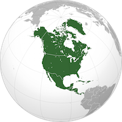
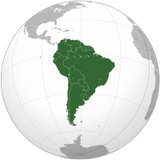
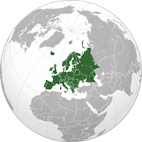
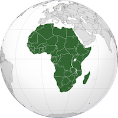
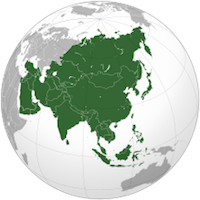
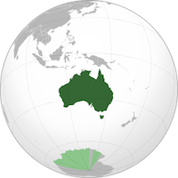

We love our artists at Arte del Mundo!
Want to sell your products with Arte del Mundo? If you are an artist
wishing to sell a product, but are not affiliated with Arte del Mundo,
please fill out the New Artist Form.
North America

A continent comprising the northern half of the American land mass,
connected to South America by the Isthmus of Panama. It contains Canada,
the United States, Mexico, and the countries of Central America.
Arte del Mundo North American Artists
- John Watson
- John Gray
- Barbara Nelson
South America

A continent comprising the southern half of the American land mass,
connected to North America by the Isthmus of Panama. It includes the
Falkland Islands, the Galapagos Islands, and Tierra del Fuego.
Arte del Mundo South American Artists
- Mariana Garcia
- Maria Torres
- Diego Martinez
Europe

A continent of the northern hemisphere, separated from Africa to
the south by the Mediterranean Sea and from Asia to the east
roughly by the Bosporus, the Caucasus Mountains, and the Ural
Mountains. Europe contains approximately 20 percent of the
world's population.
Arte del Mundo European Artists
- Mary Mortson
- Etta Candy
- Clare Hansen
Africa

The second-largest continent, a southward projection of the
Old World land mass divided roughly in two by the equator and
surrounded by sea except where the Isthmus of Suez joins it
to Asia.
Arte del Mundo African Artists
- Monifa Osei
- Tahir Iweala
- Dulani Cisse
Asia

The largest of the world's continents, constituting nearly
one-third of the land mass, lying entirely north of the
equator except for some SE Asian islands. It is connected
to Africa by the Isthmus of Suez, and borders Europe (part
of the same land mass) along the Ural Mountains and across
the Caspian Sea.
Arte del Mundo Asian Artists
- Hulin Lee
- Binh Iweala
- Yuichi Nakamura
Australia

An island country and continent in the southern hemisphere,
in the south-western Pacific Ocean, a member state of the
Commonwealth of Nations.
Arte del Mundo Australian Artists
- Zoe Smith
- Kathy Williams
- Alice Brown